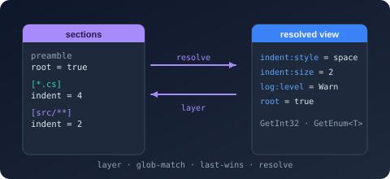

Bodu.Text.Configuration Namespace
- Package
-
Bodu.Text.Configuration 1.3.0

Purpose
Bodu.Text.Configuration is the configuration-layering package of the Bodu suite. It parses INI / EditorConfig-style text, optionally collects diagnostics, layers a preamble plus glob-anchored sections in source order for a target path, and projects the result into a flat, colon-delimited ConfigurationView. The view exposes typed accessors (GetString, GetInt32, GetBoolean, GetEnum<T>, GetValue<T> for any ISpanParsable<TSelf>) and integrates directly with Microsoft.Extensions.Configuration through the sibling Bodu.Extensions.Configuration.Text package.
Reach for this library when you need EditorConfig-style file-targeted configuration layering, programmatic INI parsing with diagnostic collection, or a Microsoft.Extensions.Configuration-compatible flat key/value view without taking a dependency on Microsoft.Extensions.* from the parser itself. The underlying data model is the library's own trivia-preserving IniDocument (sections, entries, comments, ordering), so the parser has no format-library dependency.
Static documentation
- Bodu.Text.Configuration introduction - shape of the library, headline types, scenarios.
- Bodu.Text.Configuration core concepts - vocabulary: document vs view, profile, parse/resolve/write options, key mapping, glob pattern, preamble, target path, diagnostic mode, unset.
- Bodu.Text.Configuration getting started - install and minimal samples for parse-resolve-read, profile presets, diagnostics, round-trip save.
- Bodu.Extensions.Configuration.Text -
IConfigurationBuilderbridge.
Key types
Document and view
- ConfigurationDocument - first-class document type for parsing and saving.
Parse,ParseWithDiagnostics,Load(path | Stream | TextReader),Save(document, path | Stream | TextWriter, options?). Inherits the read-only IniDocumentBase model. - ConfigurationView - read-only, one-shot resolved snapshot for a target path; implements
IEnumerable<KeyValuePair<string, string?>>; exposesValues,Keys,Count, indexer, and theGetXxx/TryGetXxx/GetValue<T>/TryGetValue<T>family. - ConfigurationExtensions - extension methods over the underlying INI primitives:
Resolve(targetPath)onIniDocumentBase,ConfigurationPath()onIniEntry. - ConfigurationParseResult - output of
ParseWithDiagnostics: the document and anImmutableArray<ConfigurationDiagnostic>of recoverable issues collected during the parse. - ConfigurationParseException - thrown by the throwing parse / load overloads under
ConfigurationDiagnosticMode.Throw.
Profiles and options
- ConfigurationProfile -
Bodu(default),EditorConfigCompatible,Strict,Relaxed. Each option type has a staticFor(profile)factory plus named presets:ConfigurationParseOptionsexposes all four profiles,ConfigurationResolveOptionsexposesBoduandEditorConfigCompatible, andConfigurationWriteOptionsexposesBodu,EditorConfigCompatible, andNormalized. - ConfigurationParseOptions - reader behaviour:
InlineCommentMode,DuplicateKeyMode,DuplicateSectionMode,DiagnosticMode,MaxLineLength,MaxKeyLength,TrimKeysAndValues,AllowKeyOnlyProperties,DefaultEncoding,KeyOptions. Static presetsBodu,EditorConfigCompatible,Strict,Relaxed. - ConfigurationResolveOptions - resolver behaviour:
PathRoot,MissingPathRootMode,ApplyPreambleProperties,PathComparison,UnsetValueMode,KeyOptions. Static presetsBoduandEditorConfigCompatible; useFor(profile)for the others. - ConfigurationWriteOptions - writer behaviour: encoding (default UTF-8 without BOM), newline style, blank-line policy, property formatting. Static presets
Bodu,EditorConfigCompatible, andNormalized(theStrictprofile's canonical layout).
Keys
- ConfigurationKey - read-only struct with
RawKey,Path(the canonical colon-delimited form),Segments,CaseSensitive. StaticParse(rawKey, options?)/TryParse(rawKey, options?, out result)factories. - ConfigurationKeyOptions -
SegmentSeparators(default{ '.', ':' }),Mapping(DotToColondefault /Colon/Identity),CaseSensitive(defaultfalse),AllowEmptySegments(defaultfalse). - ConfigurationKeyMapping -
DotToColon(default),Colon,Identity.
Diagnostics
- ConfigurationDiagnostic - immutable record carrying
Severity,Code,Message,Location. - ConfigurationDiagnosticSeverity -
Info,Warning,Error. - ConfigurationDiagnosticCode - stable category identifier (duplicate key, invalid section header, invalid unset, line-length exceeded, …).
- ConfigurationDiagnosticMode -
Throw(default),Collect,Ignore. - ConfigurationSourceLocation - line / column / file metadata pointing into the source text.
Modes
- ConfigurationInlineCommentMode -
Disabled(EditorConfig),WhitespaceIntroduced(default),Always. - ConfigurationUnsetValueMode -
TreatAsLiteral(default),RemoveEffectiveValue(EditorConfig sentinel). - ConfigurationMissingPathRootMode -
UseEmptyRoot(theBodudefault),Throw(theEditorConfigCompatibledefault).
Pattern engine
- ConfigurationPattern - compiled EditorConfig-style glob pattern.
Compile(text)+IsMatch(path). Used internally by the resolver and exposed for callers that want to test pattern matching standalone.
Example
using Bodu.Text.Configuration;
const string source = """
# Bodu configuration sample
root = true
[*.cs]
format.indent.style = space
format.indent.size = 4
logging.level.default = Information
[src/**/*.{cs,csproj}]
format.indent.size = 2
logging.level.default = Warning
""";
// Parse, optionally collect diagnostics, then resolve for a target path.
ConfigurationParseResult result = ConfigurationDocument.ParseWithDiagnostics(source);
ConfigurationDocument doc = result.Document;
ConfigurationView view = doc.Resolve("src/Bodu.Text.Configuration/src/Foo.cs");
string indentStyle = view.GetString("format:indent:style"); // "space"
int indentSize = view.GetInt32("format:indent:size"); // 2 - last-wins from [src/**]
string logLevel = view.GetString("logging:level:default"); // "Warning"
double threshold = view.GetValue<double>("limits:cpu:threshold", fallback: 0.8);
// Profile presets - swap the parser into EditorConfig-strict mode.
ConfigurationDocument editorConfig = ConfigurationDocument.Parse(
source,
ConfigurationParseOptions.EditorConfigCompatible);
// Round-trip back to text.
using StringWriter sw = new();
ConfigurationDocument.Save(doc, sw);
string canonicalText = sw.ToString();
Notes
- Immutable views. ConfigurationView is a one-shot snapshot. The underlying dictionary is exposed read-only through
Values; subsequent mutations of the originating document do not propagate. Take a fresh view after every meaningful document edit. - Thread safety. The view is safe to read from any number of threads concurrently. The parser, resolver, and save APIs are short-lived and stateless across calls; the document model itself is not thread-safe for concurrent mutation but is safe for concurrent read.
- Determinism. All parsing, resolving, and typed conversion uses InvariantCulture. Output bytes from
Saveare byte-stable for documents the library produced; documents authored by hand may be reformatted to the canonical layout on first save. - Last-wins precedence. The resolver walks the document once in source order; for any configuration key, the value from the later matching section wins. There is no override / inherit hierarchy beyond "later in the file wins" - this matches EditorConfig and is intentional.
- EditorConfig conformance. Setting the profile to EditorConfigCompatible aligns inline-comment, preamble, key-mapping, and unset behaviour with the EditorConfig 0.17.2 specification. Bodu-specific extensions (whitespace-introduced inline comments, dotted-to-colon key mapping, preamble layering) are opt-out under that profile.
- Validation. Public entry points validate inputs through
ThrowHelperand the package-localConfigurationThrowHelper. Null inputs surface asArgumentNullException; empty or whitespace strings surface asArgumentExceptionwith the parameter name set viaCallerArgumentExpression. - See also: the introduction, core concepts, and getting-started; the underlying IniDocument model; and the
Microsoft.Extensions.Configurationbridge in Bodu.Extensions.Configuration.Text.
Classes
- ConfigurationDiagnostic
Represents a single diagnostic - informational message, warning, or recoverable error - produced while reading or resolving a configuration document.
- ConfigurationDocument
Represents a parsed Bodu Text Configuration document and provides the profile-aware entry points for parsing, loading, and saving such documents. It inherits the read-only INI model from IniDocumentBase (global section, named sections, lookup) and adds Bodu-specific behaviour - profile presets, inline-comment-mode handling, diagnostic routing, and round-trip support - on top of the shared INI infrastructure.
- ConfigurationExtensions
Extension methods that layer Bodu Text Configuration behaviour (path-aware resolution and dotted-to-colon key mapping) onto the underlying IniDocumentBase and IniEntry primitives.
- ConfigurationKeyOptions
Controls how raw configuration keys are split into segments and mapped to the colon-delimited logical key shape used by the resolved view and the Microsoft.Extensions.Configuration bridge.
- ConfigurationParseException
The exception raised when a configuration document cannot be parsed. Exposes the originating diagnostic ( Diagnostic) together with any additional diagnostics gathered before the failure.
- ConfigurationParseOptions
Controls how a configuration document is parsed: comment handling, duplicate handling, diagnostic routing, length limits, and the key mapping options.
- ConfigurationParseResult
Carries the outcome of a configuration parse: the populated ConfigurationDocument and any diagnostics collected during the parse.
- ConfigurationPattern
A compiled EditorConfig-style glob pattern that matches forward-slash-delimited paths.
- ConfigurationResolveOptions
Controls how a ConfigurationDocument is projected into a ConfigurationView for a specific target path.
- ConfigurationResolvedEntry
Carries the origin metadata for a single key/value pair in a ConfigurationView - which section "won" for the key, which line of which file supplied the value, and the resolved key path itself.
- ConfigurationView
Represents the resolved snapshot of a configuration document for a specific target path: a flattened dictionary of configuration keys to their effective values, computed by layering preamble and matching sections in source order.
- ConfigurationWriteOptions
Controls how a configuration document is emitted by Save(IniDocumentBase, string, ConfigurationWriteOptions?) and related methods.
- IniDocument
Represents a mutable INI-style document, providing access to the global section and all named sections, together with a mutation surface for authoring documents programmatically.
- IniDocumentBase
Provides the shared, read-oriented model for an INI-style document: a global section plus an ordered set of named sections, with name-based lookup. Serves as the common base for the mutable IniDocument and for configuration-layer document types that expose only a read surface.
- IniEntry
Represents a single key/value entry within an IniSection. The key and value are immutable data; callers assemble documents programmatically through the owning IniSection and may edit comment trivia before writing the document back out.
- IniSection
Represents a single
[section]block in an INI-style configuration document, exposing its ordered entries and providing O(1) key lookup with optional typed value conversion.
Structs
- ConfigurationKey
Represents a configuration key in both its raw, file-level form and its colon-delimited logical form used by the resolved view and by
Microsoft.Extensions.Configuration.
- ConfigurationSourceLocation
Identifies a specific position in a configuration source document so that diagnostics, exceptions, and model elements can point back to the originating line and column.
- IniComment
Represents a single comment line preserved as trivia within an IniDocument.
Enums
- ConfigurationDiagnosticCode
Identifies a specific class of ConfigurationDiagnostic. Codes are stable so that consumers may suppress, filter, or test for particular conditions without inspecting the message text.
- ConfigurationDiagnosticMode
Controls how the reader reacts to recoverable diagnostics - either throwing immediately, gathering them on the resulting document, or silently ignoring them.
- ConfigurationDiagnosticSeverity
Classifies the severity of a ConfigurationDiagnostic emitted while reading or resolving a configuration document.
- ConfigurationInlineCommentMode
Controls how the reader treats
#or;characters that appear after a property value.
- ConfigurationKeyMapping
Selects how raw configuration keys are mapped to the colon-delimited logical keys used by the resolved view and by
Microsoft.Extensions.Configuration.
- ConfigurationMissingPathRootMode
Selects how Resolve(IniDocumentBase, string?, ConfigurationResolveOptions?) reacts when the document was parsed from a string and no PathRoot was supplied.
- ConfigurationProfile
Selects one of the predefined behaviour profiles that govern how a configuration document is parsed, resolved, and re-emitted.
- ConfigurationSectionHeaderMode
Controls how the reader treats non-whitespace text after the closing
]of a section header.
- ConfigurationUnsetValueMode
Selects how the resolver treats the literal value
unset, which EditorConfig defines as a sentinel that removes the effect of any previously set property for the matching path.
- DuplicateKeyPolicy
Specifies how the configuration parser resolves a key that appears more than once within the same section.
- IniDuplicateSectionBehavior
Defines how the configuration parser resolves a section name that appears more than once in the source.